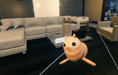
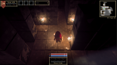
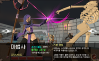

게임 클라이언트 개발자 · 최준영
CHOI
JUN YEOUNG.Client Developer.
입력의 반응부터 플레이의 리듬까지.
작은 차이를 끝까지 다듬는 개발자입니다.
PROJECT SHOWCASE
01 / 03Last Ember
정밀한 조작감을 탐구한 3D 액션 게임
ABOUT ME
의도를 구현하고,
근거로 해결합니다.
코드로 플레이를 만드는 데 매력을 느낀
Unity 게임 클라이언트 개발자입니다.
다음 수정을 생각하며 구현합니다. FSM과 데이터 분리를 적용하며 확장성과 유지보수를 고려합니다.
근거를 바탕으로 문제를 해결합니다. 로그와 Profiler로 원인을 좁히고, 수정 전후를 비교해 해결 효과를 확인합니다.
함께 만드는 흐름을 고민합니다. 웨이브·패턴 제작 도구로 팀원의 작업을 돕고, 아트·기획·TA와 구현 방향을 논의합니다.
SELECTED PROJECTS
플레이로 이어지는 아이디어.
프로젝트의 목표부터 구현 과정까지, 직접 만든 경험을 소개합니다.
MORE TO EXPLORE
Other Projects
새로운 아이디어로 넓혀가는 또 다른 작업들입니다.

SIDE PROJECT · 01Winter Stove
겨울 오두막에서 손에 닿는 물건과 고양이를 다루는 VR 미니게임입니다. 일상적인 상호작용과 손그림 제스처를 구현했습니다.

SIDE PROJECT · 02던전 개척자
횃불로 어둠을 밝히며 던전을 탐험하는 액션 게임입니다. 빛의 수명과 시야가 탐색 및 적의 행동에 연결됩니다.

SIDE PROJECT · 03Belladorn
직업 전환과 스킬 강화로 성장하는 액션 RPG입니다. 직업별 전투부터 인벤토리·장비·스킬 UI까지 플레이 흐름을 구현했습니다.
TECH STACK
경험을 구현하는 도구들.
Engine & Language
게임의 기반을 만들고,
플레이를 화면에 옮깁니다.
Gameplay Systems
행동과 상태를 나누고,
게임의 흐름을 설계합니다.
Performance
다수의 오브젝트를 다루는
효율적인 구조를 고민합니다.
LET’S WORK TOGETHER
함께 만들 다음 경험을
기다립니다.
게임 클라이언트 개발과 새로운 프로젝트에 대해
편하게 이야기 나눠 주세요.